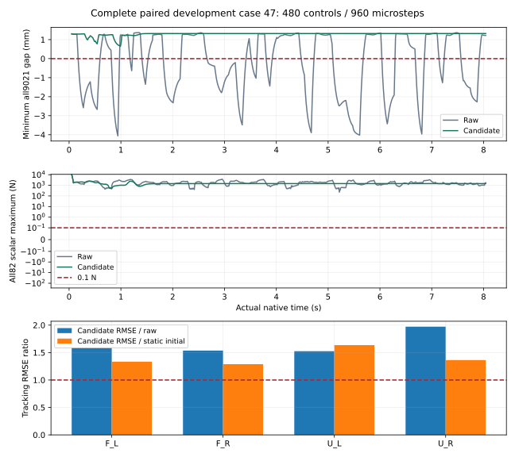

返回完整128个配对配对状态 47
128状态开发实验；完整480控制步／960物理步。本完整子任务原生退出0。原候选总监督因SSD中止退出1，随后96组重试总监督退出0，失败尝试均保留。安全与任务未验收。
共同主判据前缀合格：False；主判据获救：False。所有失败均保留。

| 实际物理判据 | 原始 | 候选 |
|---|
| 几何或接触失败 | True | True |
| 74关节硬限位失败 | True | False |
| 74关节速度失败 | True | True |
| 26关节软限位失败 | False | False |
| 全部已观测判据全长通过 | False | False |
四臂跟踪与运动
误差比大于1表示更差。基准是经过相同六槽延迟的原始请求；静态基准是保持初始位置的误差参考，并非已验证的安全保持实验。路径比只衡量运动量，不能独立证明任务成功。
| 手臂 | 跟踪RMSE／原始 | 跟踪RMSE／静态参考 | 路径长度／原始 |
|---|
| F_L | 1.586 | 1.334 | 0.137 |
| F_R | 1.537 | 1.288 | 0.127 |
| U_L | 1.525 | 1.636 | 0.091 |
| U_R | 1.972 | 1.362 | 0.079 |
候选全部74关节 q/qd 与960步曲线 CSV gzip · 原始对照全部74关节与960步曲线 · 独立复核及来源
此处相机沿用历史最小可见像素检查，不证明掌部／五类手指完整观察、全表面可见或无遗漏接触。更充分的新相机协议正在后续实验验证。